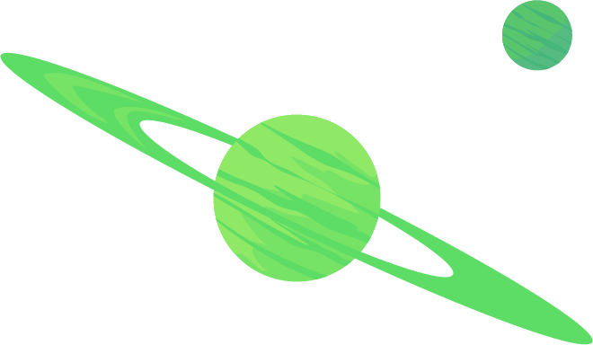
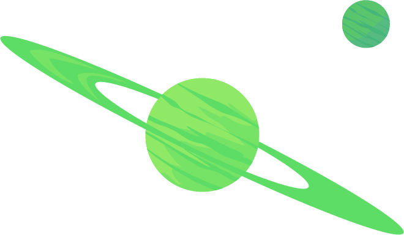

Explore

Explore

Morty Smith
Morty es un nervioso adolescente basado en Marty McFly de Regreso al Futuro. Conocido por su inquietud, torpeza y su cuestionable y dudosa personalidad, el personaje ha sido bien recibido por los seguidores de la serie. Es un joven, afable e impresionable chico que puede ser manipulado fácilmente.